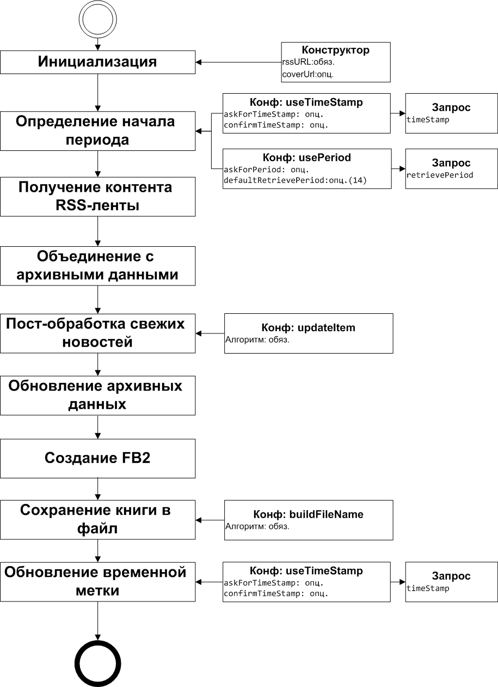

В первом случае нужно использовать функцию useTimeStamp(boolean askForTimeStampValue,boolean confirmTimeStampValue) . Первый аргумент определяет, нужно ли уточнять у пользователя дату начала периода. Если флаг выставлен в true , то перед началом создания книги выводится окно с возможностью редактирования даты начала. Второй аргумент, определяет нужно ли запрашивать у пользователя подтверждение оь обновлении временной ветки. Оба аргумента опциональны. При их отсутсвии считается, что оба они равны false .
Во втором случае нужно использовать функцию usePeriod(boolean askForPeriodValue, int defaultRetrievePeriod) . Первый аргумент определяет, нужно ли уточнять у пользователя период, или использовать последнее введенное значение автоматически. Если флаг выставлен в true , то перед началом создания книги выводится окно с возможностью редактирования продолжительности периода. Второй аргумент, продолительность периода по-умолчанию (т.е если первый аргумент равен false). Оба аргумента опциональны. При их отсутсвии считается, что askForPeriodValue = false , а defaultRetrievePeriod = 14 .
При отсутствии этих функций используется поведение по-умолчанию: useTimeStamp(false, false) .
//@ description Computerra
showMessage 'готовим книжку - ждите...'
rss('http://feeds.feedburner.com/ct_news?format=xml', 'http://www.computerra.ru/new/logo2.gif'){
useTimeStamp(true,false)
updateItem{
String content = loadAsString it.relatedURL
if(content){
String subContent = content.findFirst('<div id="content">(.*)<div id="fin">', '<!-- start -->(.*)<!-- fin -->', '<div id="content">(.*)')
if(subContent){
content = subContent
} else{
log "subcontent is null, content = $content"
it.htmlContent = ' '
return
}
content = content.deleteAll('<form.+?/form>','<noscript.+?/noscript>', '<iframe.+?/>')
it.htmlContent = content
log 'modified content of ' + it.relatedURL + ' is ' + content
}
}
}
showMessage 'генерация книжки завершена'
Первая строка задает описание скрипта (то как он будет отображен в списке доступных скриптов).
Вторая строка выводит на интерфейс сообщение "готовим книжку - ждите...". Функция showMessage - это результат работы декоратора CommunicationsDecorator.groovy . Полный список функций, добавляемых этим декоратором описан в CommunicationsDecorator.
Третья строка запускает генератор FB2-книги из RSS-ленты. Генератор инициализируется адресом RSS-ленты ( http://feeds.feedburner.com/ct_news?format=xml ) и адресом логотипа http://www.computerra.ru/new/logo2.gif
Четвертая строка конфигурирует генератор так, чтобы он использовал временную ветку. При этом, вначале будет выводится диалоговое окно с подтверждением даты начала периода.
Строки 5-20 определяют алгоритм постобработки сообщений. Копмпьютерра предоставляет лишь анонс новости, а нам нужна полная версия статьи.
В строке 6 загружается контент статьи, при этом используется функция loadAsString , которая создается декоратором CommunicationsDecorator
content = content.findFirst('<div id="content">(.*)<div id="fin">', '<!-- start -->(.*)<!-- fin -->', '<div id="content">(.*)')
content = content.deleteAll('<form.+?/form>','<noscript.+?/noscript>', '<iframe.+?/>')
из текста статьи вычленяется содержательная часть(которая находится
либо внутри тега
<div id="content">
, либо внутри блока
от
<!-- start -->
до
<iframe.+?/>
), а затем из контента удаляются лишние куски
с кодом JavaScript и
IFrame.
Функции findFirst и deleteAll появляются в результате работы декоратора StringUtilsDecorator.groovy (см StringUtilsDecorator). Функции работы со строками активно используют регулярные выражения Java (см http://docs.oracle.com/javase/7/docs/api/java/util/regex/Pattern.html или http://docs.oracle.com/javase/tutorial/essential/regex/intro.html ).
it.htmlContent = contentобновляется контент новости.
log 'modified content of ' + it.relatedURL + ' is ' + contentдля целей отладки обноленный контент логируется в файл log/script.log . Функция log добавлена декоратором LoggerDecorator LoggerDecorator.groovy .
Ну вот и все. Теперь Вы научились обрабатывать любые RSS-ленты, в том числе, и с анонсами статей. Для справок пользуйте информацию из Приложений